２２日目(9/25)～レンタカーの返却～
Vancouver⇔Seattle
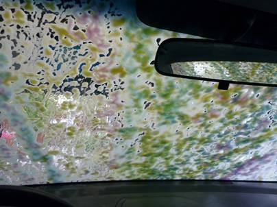
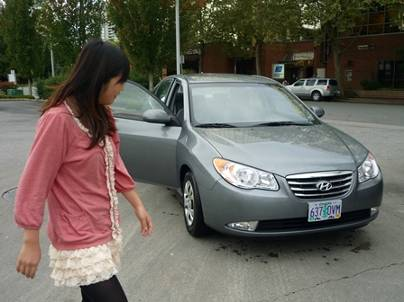
これまで約3週間、エラントラは僕たちを乗せて本当によく走ってくれた。その距離、8000km以上。何一つトラブルを起こすことなく走り続けたエラントラのボディーは泥だらけになっていた。労いの意味を込めて、最後はガソリンスタンドで最高級の洗車を施してあげることにした。冬の寒さが厳しいカナダでは日本のようなブラシタイプのものだと凍結してボディーを傷つけてしまうため、写真のようなカラフルな薬剤を吹き付けた後、強力な水圧のみであらうというものだった。ピカピカになったエラントラはなんだか誇らしげだ。ここ数年で驚くような成長を遂げた韓国のヒュンダイ。このエラントラは、性能と安さを兼ね備え、トヨタのカローラ、ホンダのシビックを凌ぐ勢いで爆発的な売れ行きを続けていると言う。
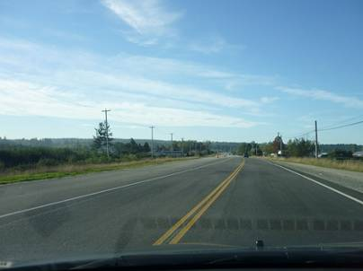
アメリカ国境を目指す。
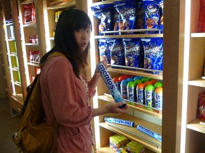
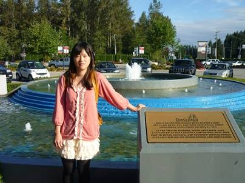
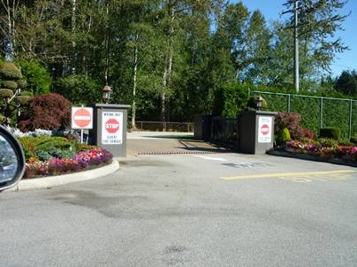
国境の審査所の直前にはちょうど空港にある感じの免税店がある。おなじみのメープルクッキーやTシャツを購入。逆走できないように、免税店の駐車上の前には戻るとタイヤがパンクするような針が敷いてあった。
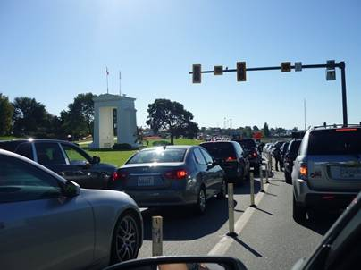
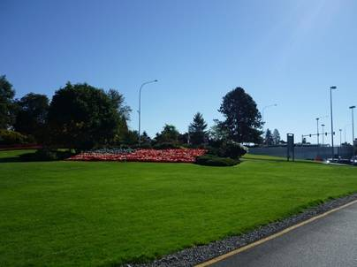
審査所の前は長打の列。
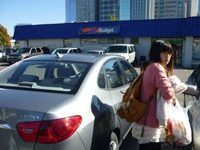
懐かしのバジェットレンタカー、シアトル支店に到着。返却時の手続きはごく簡単なものだった。エラントラ、さようなら。
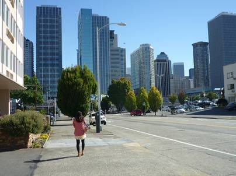
シアトルの町は晴天に恵まれ、前回訪れたときよりも暖かいような気がした。相棒と別れ、いいようのない虚無感を感じながらバスディーポへと向かった。
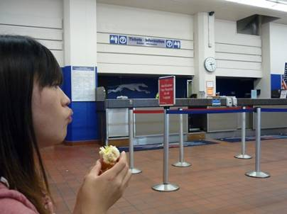
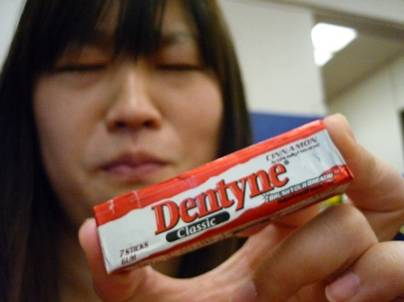
バスディーポでバスの出発を待つ間、余っていたお金でガムを購入。強烈な味だったので、結局全て食べられることは無かった。
再びバンクーバーに戻ってきた後は夕食を食べに宿近くの中華料理店へ。もともと中国人街だからか、周りの客はほとんど中国人で店内は威勢のいい中国が響き渡っていた。値段の割りに量がとてつもなく多い！